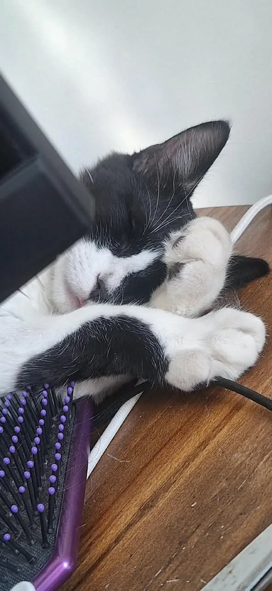
Resting after the hunt
No prey was found. The hairbrush suffered regardless.
THE HOUSEHOLD CHRONICLES
Beloved of the night. Terror of unattended food. Prince of a kingdom consisting of one bed, one refrigerator, and every surface he was forbidden to touch.
Enter the archiveTHE IMMORTAL RECORD
17 surviving portraits

No prey was found. The hairbrush suffered regardless.
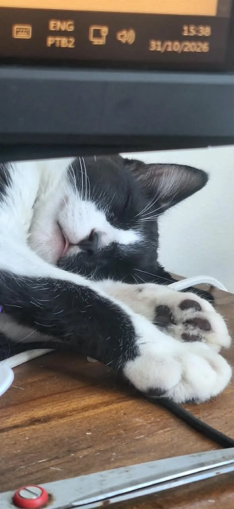
The immortal body retreats wherever it happens to be standing.
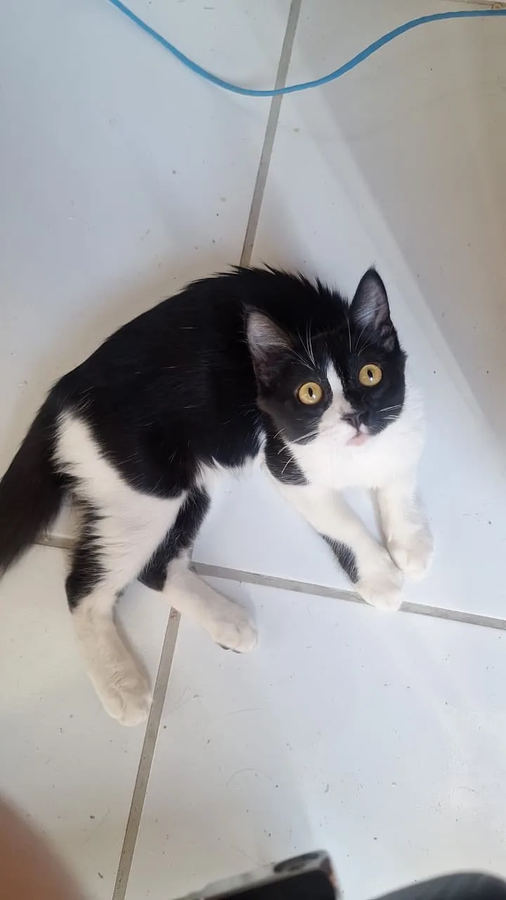
Cause of death: the floor was cold and rather pleasant.
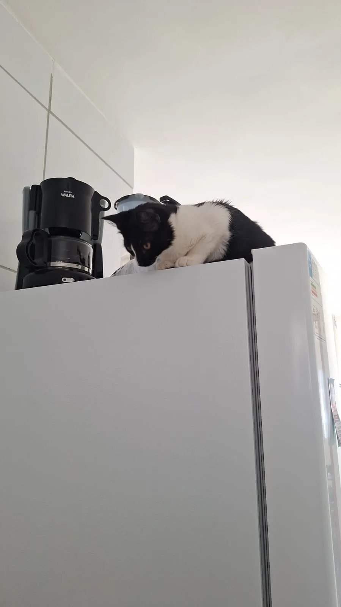
From this height, the household appears almost worthy of him.
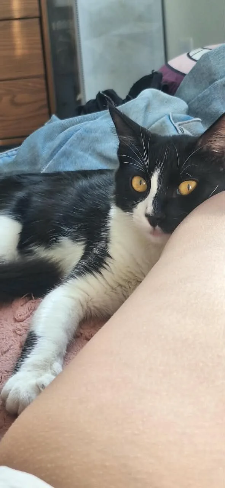
Admitted to his chambers under conditions known only to him.
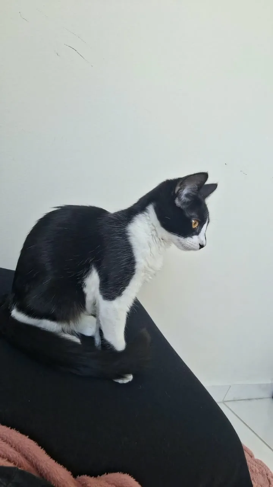
The resting place is occupied. Approach at your own peril.
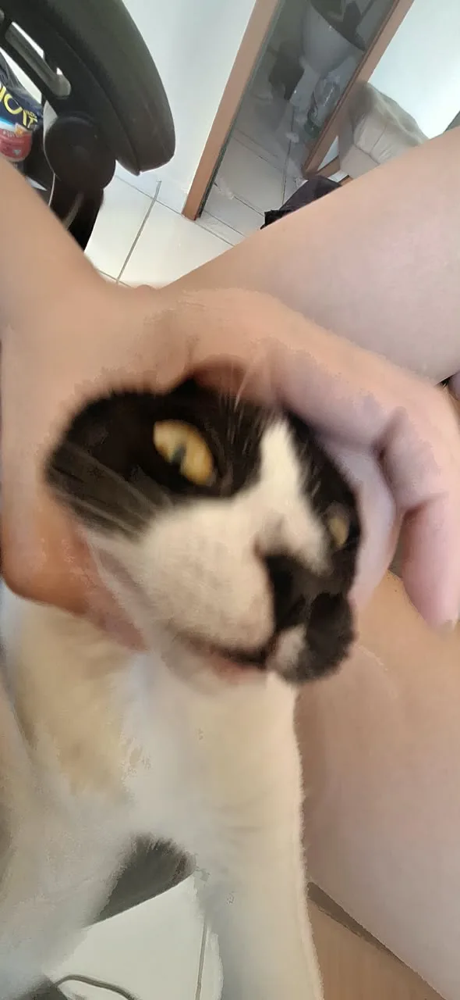
Immortality offers no protection against hands filled with love.
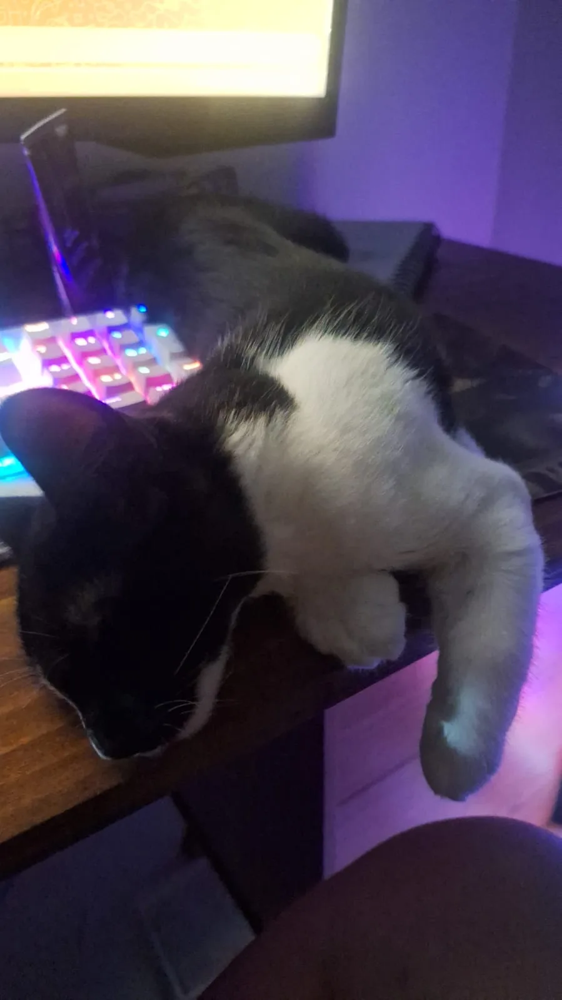
The message consisted primarily of repeated letters and one deleted document.
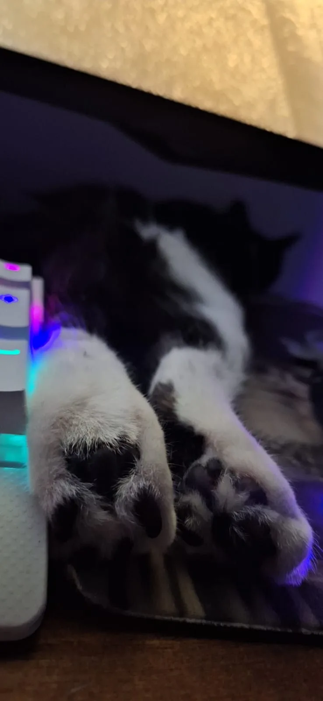
Four paws, perfectly preserved and presented for scholarly examination.
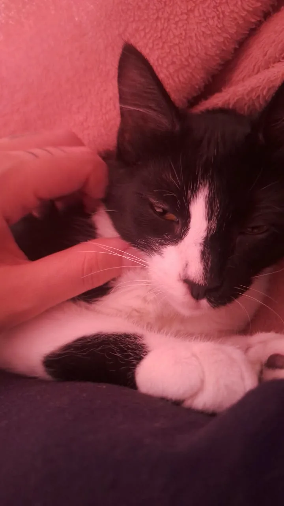
A portrait composed in bloodlight, velvet shadow, and profound fatigue.
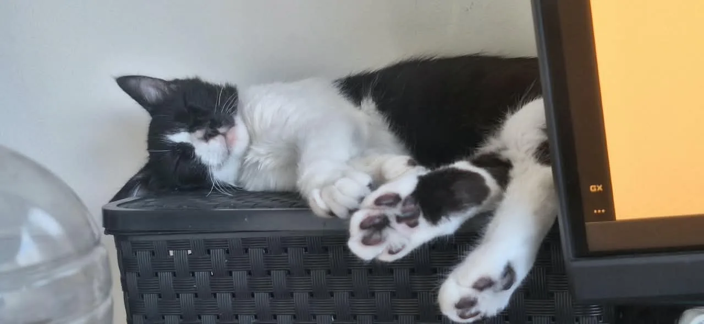
Something has pleased him. This should concern everyone.
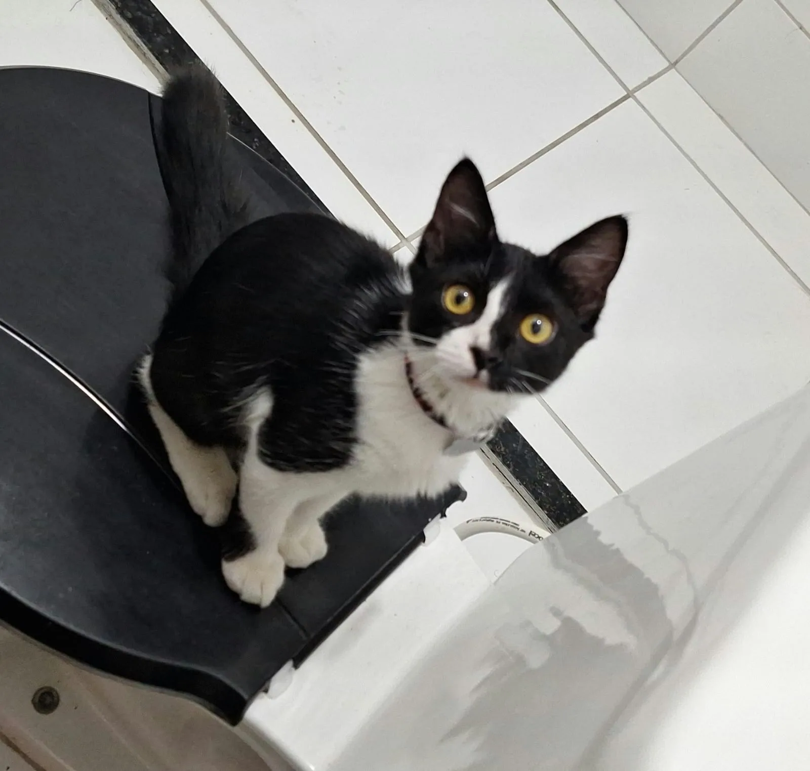
Neither privacy nor dignity survives beneath his gaze.
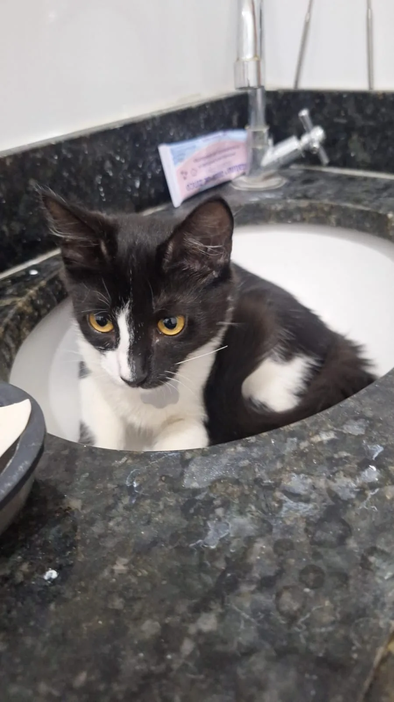
Not marble, strictly speaking, but suitable for the afternoon.
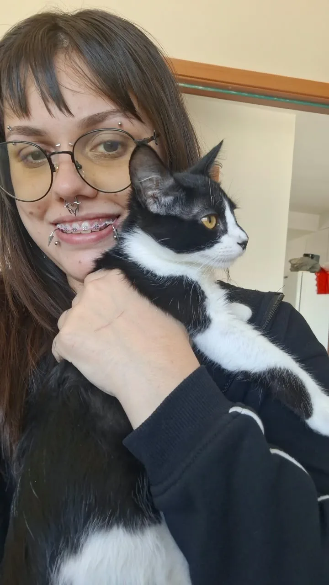
Betrayed, imprisoned, and photographed against his express wishes.
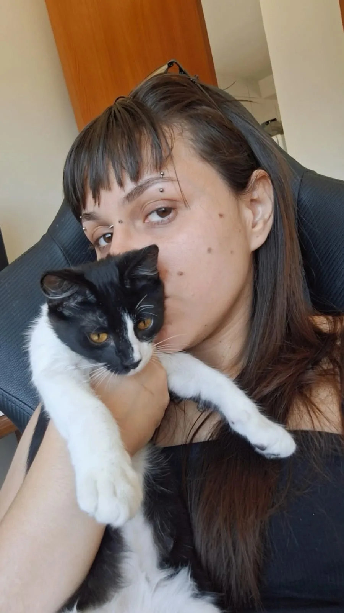
One devoted attendant and the creature to whom everything belongs.
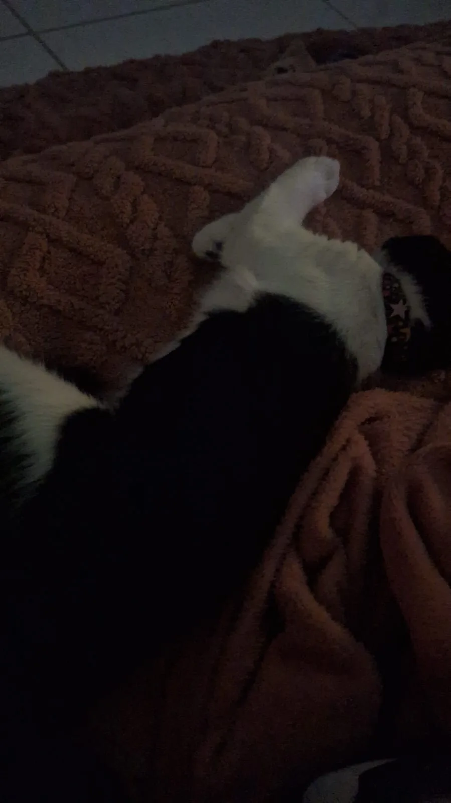
Undisturbed by conscience, obligation, or ownership of the bed.
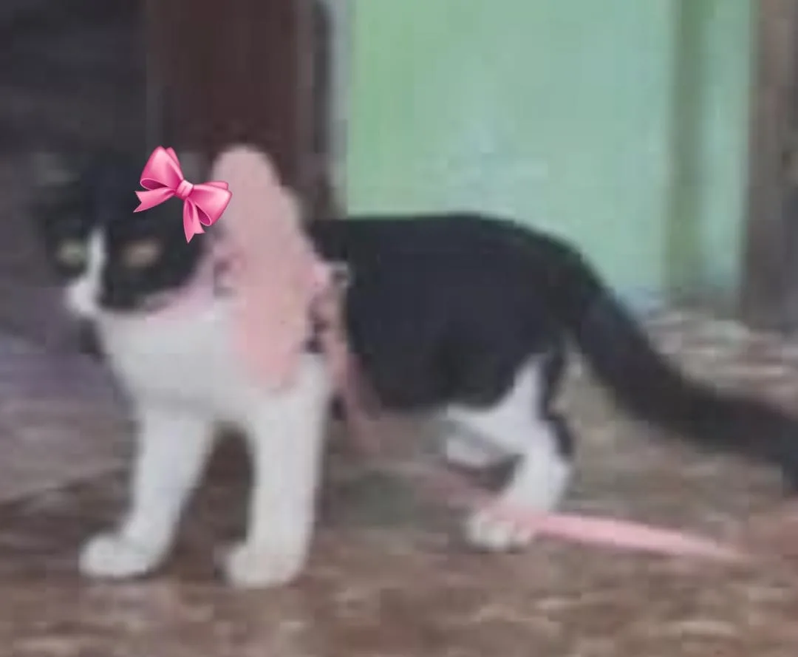
Ancient evil, eternal beauty, and one very small pink bow.